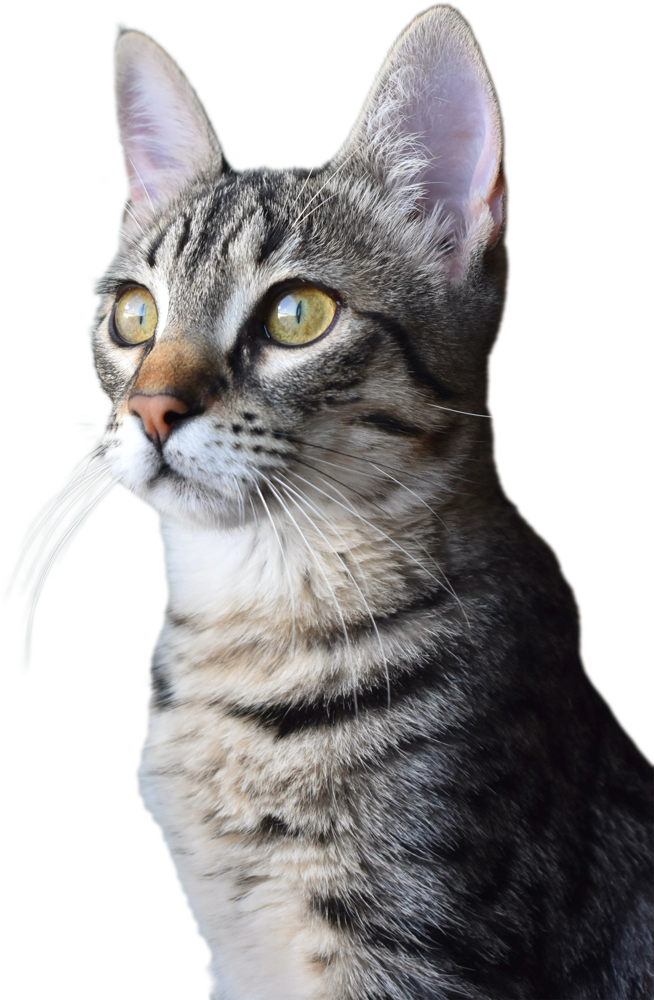

Zöld Menedék Állatvédő Alapítvány
Alapítványunk 1993-ban alakult. Legfőbb feladatunk a menhely fenntartása és működtetése.
Kb 300 - 320 kutya és 60 - 80 cica napi ellátásáról (etetés, állatorvos, oltások) gondoskodunk. A körzetben jelentős a szerepünk.
Nyilvántartást vezetünk a talált és az elveszett állatokról.
